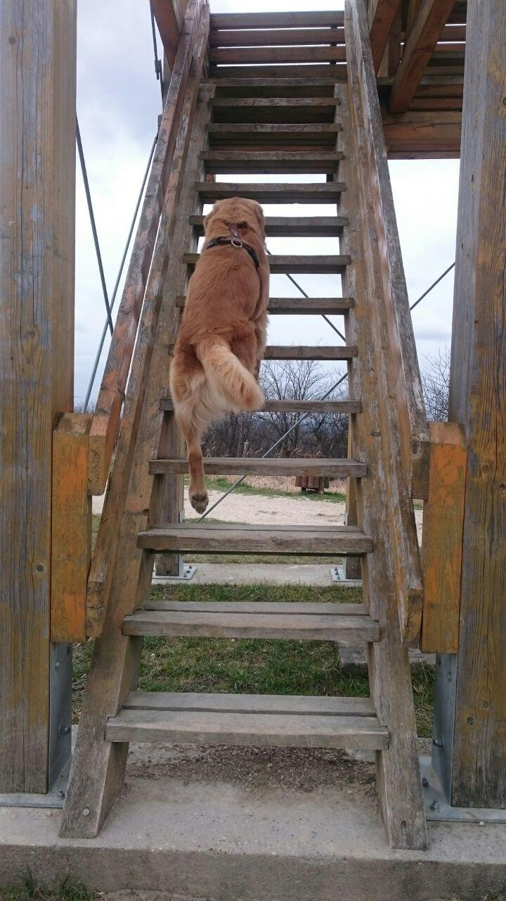
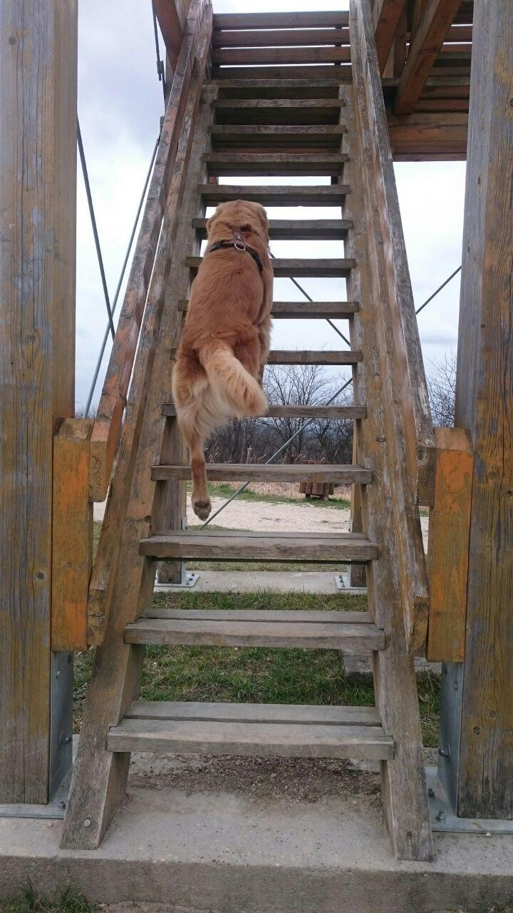
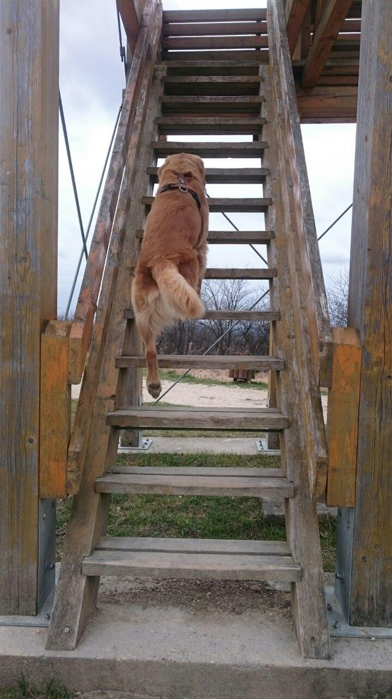
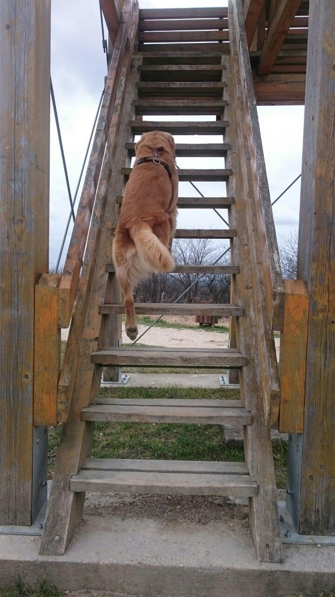

Frodo is a Golden Retriever born in 2017 on a beautiful day. Not only the world gained a new puppy, but somewhere a couple got a new family member, even they have not known it yet. His firdt day scontainted crying, running, afraid of hiw osn shade, but soon he started to trust his new mom. A few days after he got to know his father, and ever since they have a really special bonding. He learned all the basic rules easily, and have several tricks he presents with profession. He does not really like to lay down, but barking is one of his favourite ones. He can do many funny things, such as throwing his ass up the ache it, poke your arm to give him food meanwhile you are eating, and hide-and-seek is his favorit fun.

Frodo is getting 3 years old in July, so we are preparing a huge doggy party for him to spend this special day with his best friends. Serving dog friendly food, a lot of toys, a pool full of water, snackos and cattos, so unlimited joy will be on the table.
He has a bro called Figo, who is a black labrador retriever.